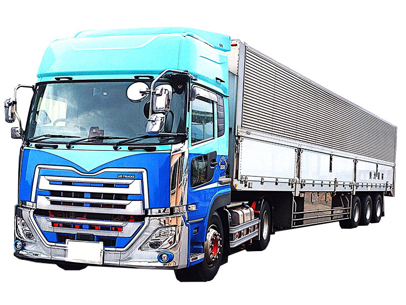

DRIVER ROLES
仕事内容
工場から配送拠点へ、配送拠点から住宅建材を運ぶ。トレーラードライバー
ウイングトレーラーで外壁材や屋根材を運びます。地場配送および長距離輸送を行っています。
- 業務
- 工場から配送拠点への建材輸送（地場・長距離）（個別の配送先は面接時にお問い合わせください）
建設現場や店舗へ、住宅建材を届ける。ユニックドライバー
ユニック車で住宅建材を配送します。三重・愛知・岐阜を中心に、建設現場や店舗へ納品する仕事です。
- 拠点
- 菰野町・弥富市・春日井市
- 業務
- 三重・愛知・岐阜の建設現場・店舗への配送（個別の配送先は面接時にお問い合わせください）